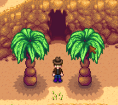
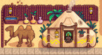
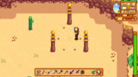
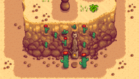
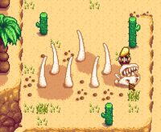
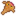
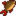

Desierto de Calico
| Desierto de Calico | |
 | |
| Residentes: | |
El Desierto de Calico es una región del mapa exterior situada muy al noroeste de Ciudad Pelícano. El clima aquí siempre es soleado y las estaciones son todas iguales.
El desierto es inaccesible hasta que el Autobús en la Parada de autobús haya sido reparado completando los Lotes de la Caja Fuerte en el Centro Cívico o comprando "Autobús" por  40 000o del Formulario de proyectos de desarrollo comunitario de Joja.
40 000o del Formulario de proyectos de desarrollo comunitario de Joja.
Lugares
| Imagen | Nombre | Descrición |
|---|---|---|
 |
Caverna Calavera | La entrada a la Caverna Calavera se encuentra en la esquina noroeste del Desierto. La Llave calavera se puede usar para abrir la puerta dentro de la caverna. |
 |
Oasis | El Oasis es una tienda ubicada en la sección suroeste del área. Está dirigido por Sandy y vende una cantidad de semillas que no están disponibles en Pueblo Pelícano, junto con un ítem adicional que depende del día de la semana.
|
 |
Comerciante del desierto | La tienda del Comerciante del desierto se encuentra al este del mapa. |
 |
Los tres pilares | Tres pilares se encuentran en la parte noreste del Desierto; esta ubicación está ligada a uno de los Secretos del juego. |
 |
Estatua de teletransporte | El jugador puede teletransportarse al desierto usando un Tótem de teletransporte: Desierto o un Obelisco del desierto. Ambos métodos transportan al jugador a la misma estatua, ubicada al sur del Comerciante del desierto. El autobús también aparece en el desierto cada vez que el jugador se teletransporta, lo que le permite volver en autobús como de costumbre. |
 |
Dragón de arena | En la cima de una colina ubicada directamente al norte del Oasis, se encuentran los huesos grandes de un Dragón de arena. Mientras el jugador se encuentre cerca del cráneo de la criatura, se puede interactuar con él, lo que da como resultado un texto que dice: «Sus fauces apuntan al sol del desierto. Incluso tras su muerte, anhela darle un bocado». Está relacionado con la misión "El misterioso Qi". |
Recolección
Los mismos objetos recolectables se encuentran en el desierto durante todo el año:[1]
 Coco (50%) e
Coco (50%) e  Higo chumbo (50%)
Higo chumbo (50%)
Los objetos de recolección se generan a una tasa promedio de 2.0 por noche durante todo el año[2]. El mapa muestra las ubicaciones posibles como casillas de color rojo y morado; cuando los Árboles originales están presentes, las casillas morados tienen un 90 % menos de probabilidades de generar objetos, porque se clasifican como si estuvieran detrás de los árboles originales.
Los Árboles originales encontrados en el desierto son todos Palmeras. Se pueden talar. No dejan semillas, pero ocasionalmente pueden dejar un Coco cuando se cortan o se sacuden. No se puede colocar Resineras en las Palmeras.
Además, los árboles normales (Arce, Roble, Pino y Árbol de caoba) se pueden plantar en todo el Desierto.
Lugares de artefactos
Los Artefactos que se pueden encontrar por desenterrar un Lugar de artefacto en el Desierto son:
 Fósil de palmera (7%)
Fósil de palmera (7%) Reliquia dorada (6%)
Reliquia dorada (6%) Máscara dorada (3%)
Máscara dorada (3%)
Otros posibles ítems son:
- 1-3
 Arcilla (48%)
Arcilla (48%)  Libro perdido (20%); una vez que se han encontrado todos los Libros perdidos, cualquier Libro Perdido potencial es remplazado por
Libro perdido (20%); una vez que se han encontrado todos los Libros perdidos, cualquier Libro Perdido potencial es remplazado por  Semillas variadas.
Semillas variadas.- 1-3
 Piedra (16%)
Piedra (16%) - Una
 Nota secreta no descubierta: Hasta un 4% de probabilidad, solo si el jugador tiene la Lupa.
Nota secreta no descubierta: Hasta un 4% de probabilidad, solo si el jugador tiene la Lupa.
Hay que tener en cuenta que el Ñame nival, la Raíz invernal y el Brote de arroz nunca se encontrarán en el desierto.
Los lugares de artefactos se generan a una tasa promedio de 1.0 por noche, excepto en Invierno, cuando la tasa promedio aumenta a 1.4 por noche.[3]
Zona de pesca

La zona principal para pescar en el desierto es el estanque en la sección noroeste. El jugador puede atrapar dos peces únicos aquí: el Lenguado y la Carpa escorpión. El Lenguado es necesario para el  Lote Peces Especiales en la Pecera.
Lote Peces Especiales en la Pecera.
También es posible pescar en el charco de agua en el borde sur del mapa, si la Habilidad de Pesca del jugador es lo suficientemente alta como para que la caña llegue al agua. Sin embargo, la calidad del pescado siempre será "normal" en el estanque del sur, ya que la Zona de pesca es 0 para todo el estanque[4]. La Pegatina pirámide se puede pescar aquí (10 % de probabilidad). aca tambien se puede pescas la Gelatina de Río
| Hora | |||||||||||||||||||||
|---|---|---|---|---|---|---|---|---|---|---|---|---|---|---|---|---|---|---|---|---|---|
| Todas las estaciones | 06 | 07 | 08 | 09 | 10 | 11 | 12 | 13 | 14 | 15 | 16 | 17 | 18 | 19 | 20 | 21 | 22 | 23 | 00 | 01 | |
|  Lenguado | |||||||||||||||||||||
|  Carpa escorpión | |||||||||||||||||||||
Curiosidades
- El autobús que viaja a través de un túnel para llegar a un desierto puede ser una referencia al juego de Nintendo "Mother 2 (Earthbound)".
Referencias
- ↑ Para cada objeto de recolección, el porcentaje provisto es el porcentaje promedio de todos los objetos de recolección que serán del ítem especificado para esa estación. Los datos de entrada son Locations.xnb, que se procesan mediante código en GameLocation::spawnObjects.
- ↑ Del total de 3000 casillas en el desierto, 923 (31%) son ubicaciones de generación válidas para objetos de recolección estándar. Para obtener más información sobre la generación de ítems de recolección, consulte Recolección.
- ↑ Del total de 3000 casillas en el desierto, 1229 (41%) son ubicaciones de generación válidas para Lugares de artefacto durante todo el año. Aunque las ubicaciones de los artefactos son las mismas en Invierno que el resto del año, la tasa de generación es mayor en Invierno porque chanceForNewArtifactAttempt en GameLocation:spawnObjects es mayor en Invierno. Consulte Lugar de artefacto para más información.
- ↑ Las casillas de agua en el estanque sur se manejan más como una fuente: la información se almacena en la capa Building del mapa en lugar de en la capa Back. La pesca está permitida, según los datos de Building, pero todos los cálculos de la zona de pesca consideran que la casilla es una casilla de tierra, por lo que la zona de pesca se establece en cero.
Historial
- 1.0: Introducido.
- 1.07: Se solucionó el problema relacionado con la aparición del Ñame nival en el desierto.
- 1.4: Se agrega el Comerciante del desierto. Se corrigió un error por el cual el Ñame nival y la Raíz invernal podían generarse desenterrando en Invierno. Se aplican varias correcciones visuales.
- 1.4.1: Ahora solo se puede comprar un Caramelo mágico cada jueves con el Comerciante del desierto.
- 1.4.4: Se solucionó el problema por el cual las trampas para cangrejos colocadas en el estanque del desierto se renderizaban incorrectamente. Ya no se pueden colocar ítems encima del Comerciante del desierto.
- 1.5: Ahora la Pegatina pirámide puede ser pescada en el estanque del sur.
- 1.5.4: Ahora las palmeras ya no dejan Cocos dorados al ser taladas.
| Lugares | |
|---|---|
| Lugares | Bosque secreto • Bosque Tizón • Bosque trasero • Cantera • Caverna Calavera • Cementerio • Cloacas • Desierto de Calico • Estanque de la granja • Ferrocarril • Isla Jengibre • Granja • Mina de cantera • Minas • Montaña • Playa • Madriguera de bichos mutantes • Pantano de la Bruja • Parada de autobús • Pueblo Pelícano • Túnel • Vagoneta |